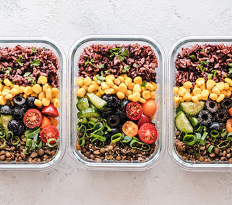

SÅDAN SPARER DU PÅ MADBUDGETTET
Hvis man har mistet overblik over sit forbrug og ikke føler at man har nogle penge i slutningen af måneden, kan det være smart at undersøge sit madbudget først. Her er 7 tips til at sænke dit madbudget.
FÅ ET OVERBLIK
Prøv at gå igennem din netbank og kategoriser alle dine udgifter på mad du har haft den seneste måned. Kategoriser udgifterne i fx:
- Take-away
- Mad efter byen
- Dates med kæresten
- Ude og spise med veninder
Når du har kategoriseret disse udgifter, kan du regne dem sammen og se hvor meget du bruger på hver enkelt kategori. Vurder herefter hvor du ønsker at spare og hvordan.
LAV EN MADPLAN
Planlæg en uge frem hvad du skal spise. Her skal du være realistisk, så du ikke ender med at spise rugbrød og havregryn til aftensmad i 2 uger i streg. Noter hvor mange måltider og snacks du typisk spiser på en dag og planlæg hvad du ønsker at spise til disse.
Du kan lave madplanen ud fra hvad du allerede har i køleskabet og samtidigt lave en indkøbsliste til de ting du mangler for at opfylde listen. Herunder kan man se et eksempel på en madplan:

STRUKTURERET INDKØBSTURE
Du kan spare meget ved at have planlagt hvad du mangler inden du går hen til indkøbsforretningen. Herved undgår man spontane køb og undgår at skulle handle flere gange i ugen. Hvis du planlægger grundigt, kan man holde sig til at handle stort ind en gang i ugen, derved er det også nemmere at holde styr på sit madbudget.
MEAL PREP
Man kan enten lave lækre og næringsrige madpakker til flere dage, lave en stor portion aftensmad, eller skære frugt og grøntsager ud til snacks resten af ugen.
Der er flere fordele ved at lave mad til flere dage for eksempel:
- Det er mere overskueligt at spise sundt.
- Man sparer tid ved kun at skulle lave forarbejdet en gang.
- Det er nemt at tage med på vejen, så man undgår spontane mad køb.
- Du undgår madspild ved at kunne bruge hele grøntsagen i stedet for at skulle have en lille rest tilbage der ender med at blive for gammel.
UNDGÅ MADSPILD
Undgå at smide mad ud. Når du handler ind, skal du være realistisk over hvad du tror du kan nå at få spist inden det bliver for gammelt. Planlæg evt. madretter efter hvad du har tilbage i køleskabet eller brug dine næsten for gamle madvarer som erstatning for noget andet. Man kan for eksempel lave rasp, croutoner, pizzabunde, sandwichs og meget andet med tørt brød.
DRIK VAND
Prioriter at drikke vand, i stedet for at drikke sodavand, juice eller andet. Dette er både sundere og man sparer på ikke at skulle købe andre drikkevarer. Hvis det ikke er muligt at drikke vand hele tiden, prioriter at købe de billigere mærker i stedet for mærkevaren.
Prioriter at lave mad hjemmefra
Denne siger sig selv, men hvis man har en vane med at købe mad i kantinen eller spise ude med veninderne, er dette en kæmpe ændring i sit madbudget. Hvis du ofte bruger mange penge på mad sammen med dine venner og ikke ønsker at føle dig udenfor, kan du eventuel foreslå at starte en madklub, tage på picnic, eller lave noget kulturelt i stedet, hvor man har en madpakke med.